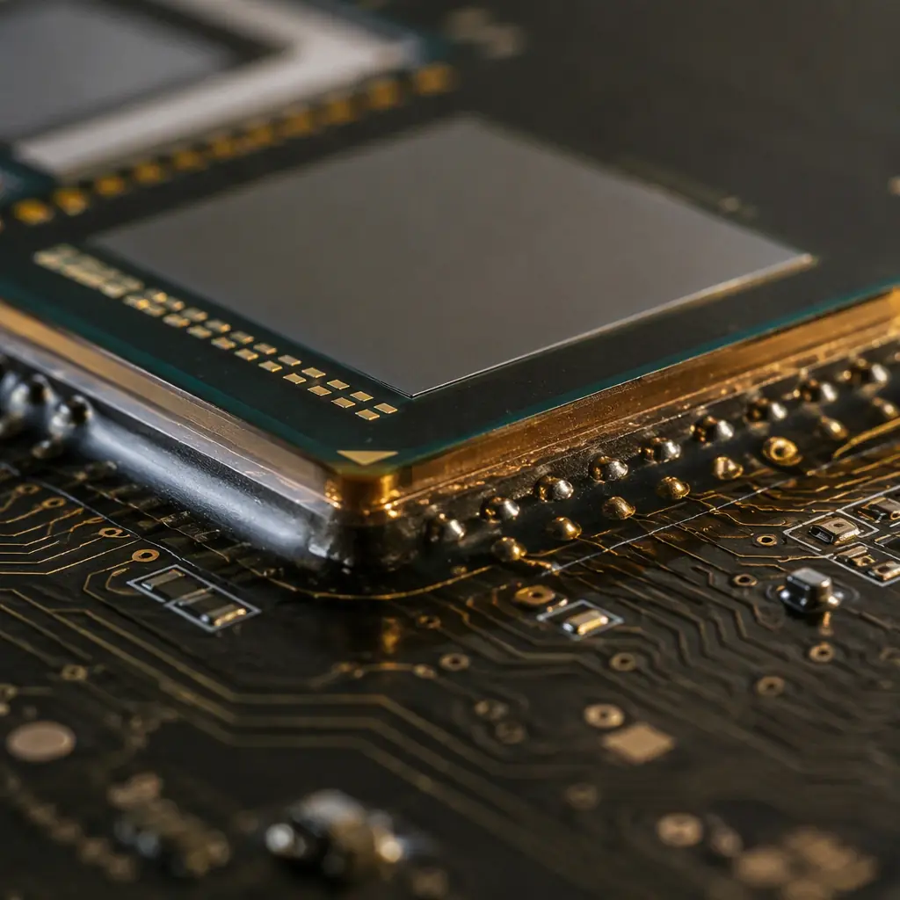
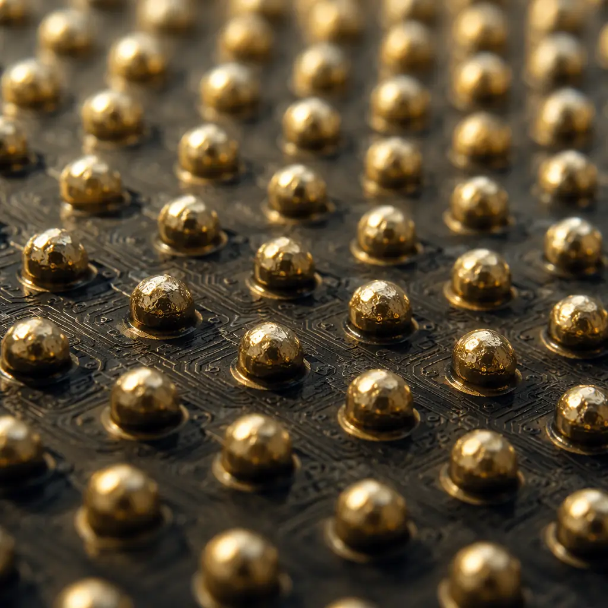

Flip-chip assembly is no longer confined to semiconductor packaging houses. As chip designers push I/O counts past the limits of wire bonding — and as PCB fabricators build substrates with 30μm line/space capability — the PCB itself becomes the package substrate. This convergence means PCB buyers who previously ordered standard SMT boards now confront a new set of requirements: 130μm bump pitch tolerances, sub-10μm co-planarity across the die footprint, and capillary underfill that must flow under a 75μm gap without voids.
At Huaxing PCBA, we manufacture flip-chip PCBs for applications ranging from 40μm bump-pitch FPGA carrier boards to high-power GaN RF modules dissipating over 80W through thermal via arrays. Our substrate capability — 12μm trace/space on low-CTE laminates, laser-drilled microvias down to 75μm, and ENEPIG surface finish optimized for solder bump wetting — supports first-pass yields above 98% on production volumes. This guide translates semiconductor packaging requirements into PCB fabrication specifications.

Why Flip-Chip on PCB Is Different From Standard SMT
In a standard SMT assembly, the component sits on top of the board with solder joints around its perimeter (QFP, SOIC) or underneath in a grid (BGA). The PCB substrate sees relatively uniform thermal expansion, and the solder joint is the sole mechanical and electrical connection. Flip-chip inverts this: the silicon die faces down, with thousands of tiny solder bumps connecting directly to PCB pads. The die, PCB substrate, and underfill material form a three-material composite with mismatched coefficients of thermal expansion (CTE).
Silicon has a CTE of approximately 2.6 ppm/°C. Standard FR-4 PCB material is 14-17 ppm/°C in the X-Y direction. That 5-6× mismatch creates enormous shear stress on the solder bumps during every thermal cycle — the primary failure mechanism in flip-chip assemblies. The solution is not a single material change but a system design: low-CTE substrate, compliant underfill, and thermal management that reduces the ΔT the assembly experiences. See our PCB laminate selection guide for CTE comparisons across material families.
Key Rule: The substrate CTE must be within 2× of the silicon CTE for reliable flip-chip assemblies. For bare silicon at 2.6 ppm/°C, this means substrate CTE below 8 ppm/°C. Standard FR-4 at 15 ppm/°C requires underfill reinforcement to bridge the gap — but the substrate still needs to be in the right range.
Substrate Material Selection for Flip-Chip
Low-CTE Laminates — The Non-Negotiable Foundation
Standard FR-4 (CTE 14-17 ppm/°C) is incompatible with flip-chip reliability beyond prototype quantities. The substrate must use a low-CTE laminate: Mitsubishi BT resin (CTE 8-10 ppm/°C), Isola IS410 (CTE 10-12 ppm/°C), or polyimide (CTE 12-14 ppm/°C). For the most demanding applications — automotive under-hood, downhole drilling, satellite — ceramic-filled hydrocarbon laminates (Rogers RO4000 series, CTE 6-11 ppm/°C) provide the closest CTE match to silicon. The material cost premium is 3-8× over FR-4, but field failure avoidance typically justifies it within the first production year.
Core Thickness & Layer Count Planning
Flip-chip substrates typically require thin cores (50-100μm) to minimize Z-axis expansion and enable fine-pitch microvia drilling. However, thin cores reduce mechanical rigidity, making panel handling during fabrication more challenging. A 4-layer flip-chip substrate might use a 100μm BT core with 2 build-up layers per side, achieving 80μm total thickness per dielectric layer. Layer count scales with I/O density: a 500-bump die typically needs 4-6 layers; a 2,000-bump high-performance computing die may need 10-14 layers with multiple build-up cycles. Our PCB stackup design guide covers layer planning methodology.
Surface Finish Compatibility — ENEPIG Over ENIG
Flip-chip solder bumps require a surface finish that stays flat (sub-5μm co-planarity across the die footprint), provides excellent wetting for lead-free SAC305 or SnAg solder, and survives multiple reflow cycles without oxidation. ENIG (electroless nickel immersion gold) is widely used but has a critical limitation for flip-chip: the nickel layer can form a brittle Ni₃Sn₄ intermetallic with tin-based solders under thermal stress. ENEPIG (electroless nickel electroless palladium immersion gold) adds a palladium barrier layer that prevents nickel migration, improving drop-test reliability by 3-5× over ENIG. For the highest reliability, electroplated Ni/Au with hard gold (Type III, 99.7% purity) on the bump pads provides the flattest surface. Read our surface finish selection guide for a complete comparison.
Bump Pitch and PCB Fabrication Limits

Flip-chip bump pitch directly determines PCB fabrication requirements. At 250μm pitch (peripheral array on a modest I/O die), the PCB needs 25μm line/space with 100μm capture pads — achievable with standard semi-additive processing (SAP) on most low-CTE laminates. At 130μm pitch (area array, high I/O), the PCB needs 12-15μm line/space with 60μm pads and 50μm solder mask dams between pads. This is at the limit of modified SAP (mSAP) processing and requires laser direct imaging (LDI) for photolithography.
| Bump Pitch | Min. Trace/Space | Pad Diameter | Solder Mask Dam | Via Type |
|---|---|---|---|---|
| 250-300μm | 25-30μm | 120-140μm | 75μm | Laser microvia (100μm) |
| 180-200μm | 18-22μm | 90-110μm | 60μm | Laser microvia (75μm) |
| 130-150μm | 12-15μm | 60-75μm | 40-50μm | Laser microvia (50μm) |
| <130μm | 8-12μm | 40-60μm | 30-40μm | UV laser + copper fill |
Our facility supports flip-chip substrates down to 130μm bump pitch with 12μm trace/space on BT and polyimide laminates. For 100μm and below pitch, we collaborate with specialized substrate suppliers while handling assembly and test in-house. The fabrication limit is not a single number — it's a function of the laminate's dimensional stability, the solder mask registration tolerance, and the laser drill positioning accuracy working together.
Capillary Underfill: Making the Thermal Mismatch Work
Underfill Material Selection — Filler Content vs Flow Distance
Capillary underfill is an epoxy-based material with silica filler particles that flows under the die by capillary action after solder reflow. The filler loading (typically 50-70% by weight) reduces the composite CTE from ~30 ppm/°C (unfilled epoxy) to 18-25 ppm/°C (filled), bridging the gap between silicon (2.6) and substrate (8-12 ppm/°C). Higher filler content = lower CTE = better reliability. But higher filler content also increases viscosity, reducing flow distance under large die. For die larger than 15×15mm, a lower-viscosity underfill (40-50% filler) may be necessary, with reliability compensated through thermal management rather than CTE matching. The dispense pattern — single-line, L-pattern, or U-pattern along the die edge — must be validated per die geometry.
Void-Free Underfill — Process Parameters That Matter
Underfill voids are the silent killer of flip-chip reliability. A void directly under a solder bump creates a stress concentration that reduces thermal cycling life by 50-80% at that location. Achieving void-free underfill requires: substrate pre-heat to 80-100°C before dispense (reduces viscosity for better flow), dispense along the die edge with a 0.5-1.0mm standoff, and a 5-15 minute flow time at temperature before cure. Post-cure inspection with scanning acoustic microscopy (SAM) is the gold standard for void detection — X-Ray has insufficient contrast to distinguish underfill voids from the surrounding epoxy.
Thermal Management for High-Power Flip-Chip
When a flip-chip die dissipates more than 15-20W, the PCB substrate becomes a primary heat path. Unlike wire-bonded packages where heat spreads through the die attach pad to a leadframe, flip-chip heat must travel through the solder bumps → PCB pads → thermal vias → copper planes → eventually to a heatsink or enclosure. This path has multiple thermal interfaces, each contributing 0.1-0.5°C/W of resistance.
Thermal Via Arrays Under the Die
A dense array of plated thermal vias directly under the die footprint is the most effective heat extraction method. For a 10×10mm die, a 6×6 grid of 200μm vias on 500μm pitch reduces junction-to-board thermal resistance (θjb) from ~8°C/W (no vias) to ~3°C/W. The vias should be filled and capped (VIPPO — via-in-pad plated over) to prevent solder wicking during reflow. For die exceeding 80W, a copper coin or thermal plug embedded in the PCB core provides a direct metal path to the backside heatsink, reducing θjb below 1°C/W. See our via fill types comparison and thermal management guide for detailed design rules.
Design Rule: Thermal via diameter should not exceed 1/3 of the solder bump pad diameter to avoid solder starvation. For a 120μm flip-chip pad, limit thermal vias to 40μm — which requires UV laser drilling and is at the edge of standard PCB fabrication. Consider bump redistribution to create thermal-only pads if the I/O pitch is too tight for adequate via density.
Testing Flip-Chip Assemblies: Beyond Standard ICT
Flip-chip assemblies cannot be probed at the bump level — the die covers the connection points. Electrical test must route through PCB test points, which means the PCB design must include dedicated test pads on the bottom side or perimeter for each net connected to the flip-chip die. Boundary-scan (JTAG/IEEE 1149.1) is the primary test methodology for flip-chip interconnects, checking every bump connection without physical probe access. For high-reliability applications, built-in self-test (BIST) circuits in the silicon complement external testing. Our design for testability guide covers test point placement and boundary-scan implementation.
When Flip-Chip Makes Sense — And When It Doesn't
Flip-chip is not a universal upgrade from wire-bond or BGA. It adds 30-60% to PCB fabrication cost (low-CTE materials, fine-line processing), requires underfill process development per die design, and limits PCB fabricator options to those with mSAP capability. The decision comes down to three factors: I/O density beyond what peripheral wire-bond can achieve (>500 I/O on a sub-10mm die), signal integrity requirements where 1-2nH bond wire inductance is unacceptable (>5 Gbps per lane), and thermal density where the die backside must be exposed for direct heatsink attachment. If your design hits two of these three, flip-chip is justified. If it hits none, BGA with wire-bonded die in package is the more cost-effective path.
At Huaxing PCBA, we support flip-chip PCB fabrication from 130μm bump pitch with ENEPIG surface finish on low-CTE laminates, plus full capillary underfill dispense and SAM inspection. Our engineering team reviews each flip-chip design for substrate compatibility, thermal via sufficiency, and test access — before fabrication begins. Explore our HDI technology capabilities or contact us with your die specifications for a substrate feasibility review.